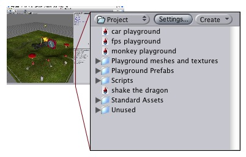

A large part of making a game is assigning all your source files to world objects. This goes for textures, sound effects and behaviour scripts. Inside Unity, you have quick access to all the files that makes up your game from the Project view:
|  |
This view shows the organization of files in your project folder. Whenever you change one of your asset files, changes are immediately reflected into your game!
In order to import an asset file in your game, you simple move the file into the Assets folder, and it will get imported into Unity. To assign it to objects in your game scenes, simply drag the files from the project window over your objects in the hierarchy or scene views.
What exactly happens depends on the type of file:
To get the low-down on assets, read All you never wanted to know about assets. If you can't be bothered, at least remember this:
- Rename and move files to your heart's content inside Unity; Nothing will break.
- Never rename or move anything from the Finder or another program; everything will break.